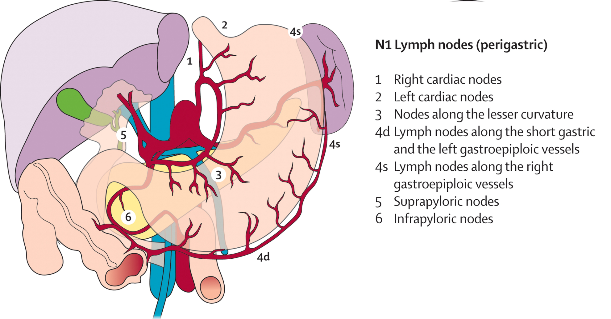
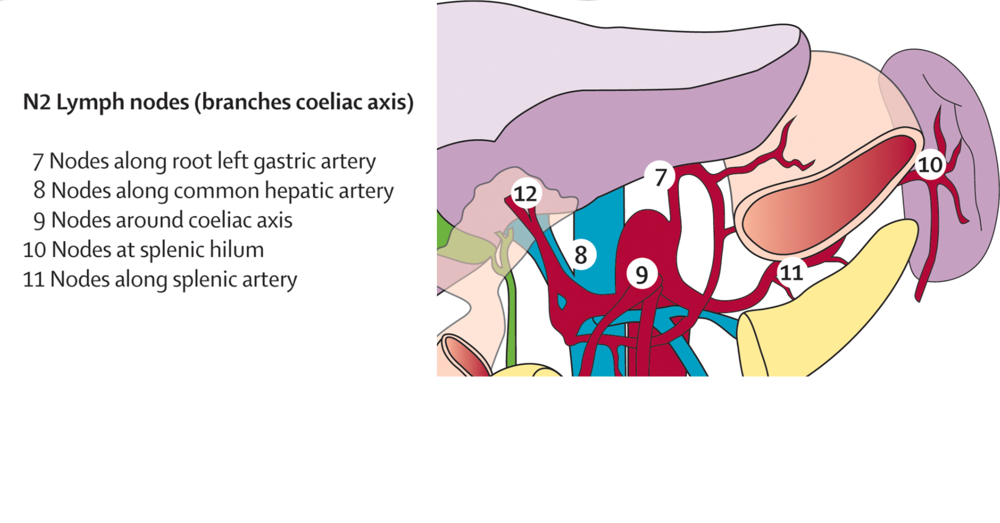
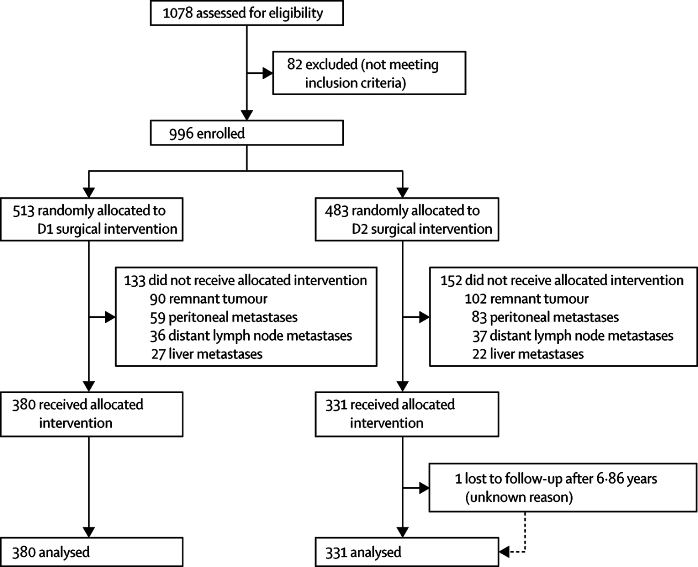
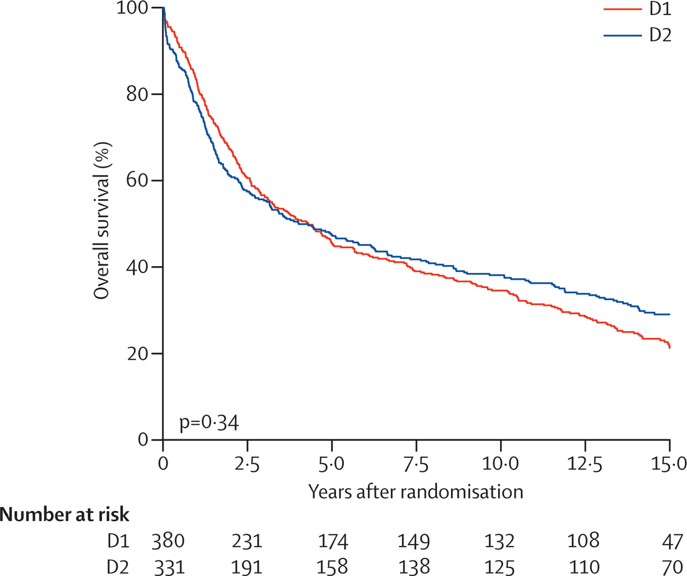
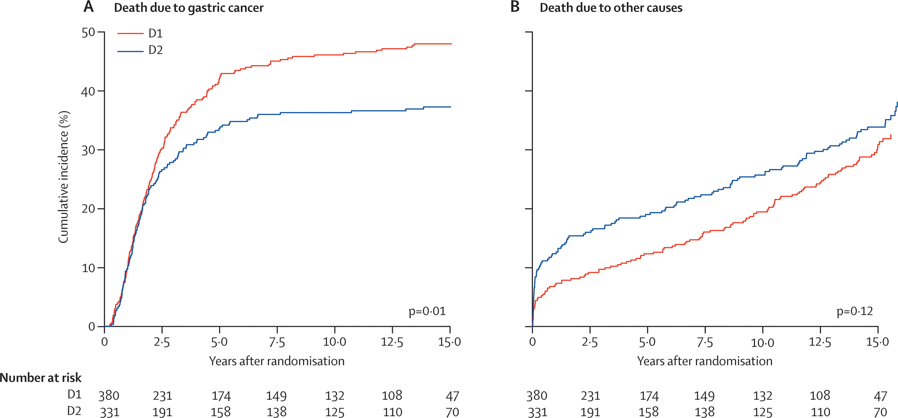
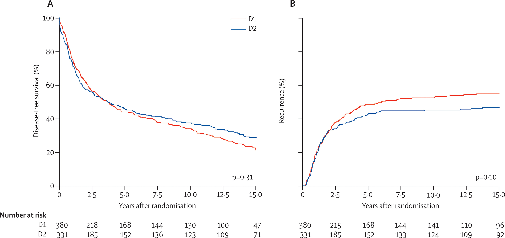
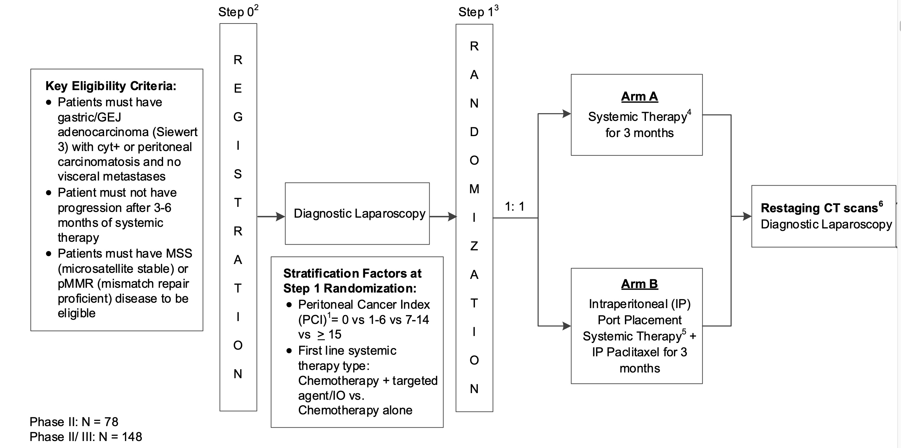
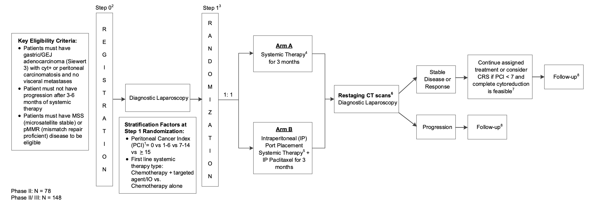

Gastric Cancer Treatment
Gastric Cancer: A Comprehensive Lecture for Medical Students
Slide 1 — Title Slide
Gastric Cancer
A Comprehensive Overview for Clinical Clerkship Students
Slide 2 — Learning Objectives
By the end of this lecture, students should be able to:
- Describe the epidemiology and major risk factors for gastric cancer
- Explain the Correa cascade and the role of H. pylori in gastric carcinogenesis
- Classify gastric cancer by histologic (Lauren) and molecular (TCGA) subtypes
- Outline the diagnostic workup and staging of gastric cancer
- Describe stage-appropriate treatment including surgery, perioperative chemotherapy, immunotherapy, and targeted therapy
- Identify key biomarkers that guide treatment selection (PD-L1, HER2, CLDN18.2, MSI/dMMR)
- Discuss screening and prevention strategies
Slide 3 — Epidemiology: The Global Burden
- 5th most common cancer worldwide; ~968,350 new cases and ~659,853 deaths in 2022[1]
- 3rd leading cause of cancer-related death globally[2]
- Incidence hotspots: East Asia, Eastern Europe, South America[2]
- Male-to-female ratio approximately 2:1[1]
- In the US: ~30,300 new cases and ~10,780 deaths estimated in 2025[1]
- Median age at diagnosis: 68 years[1]
- 5-year relative survival (all stages, US): improved from 15% (1977) to 36% (2020)[1]
Key Trend: Incidence is declining overall due to reduced H. pylori prevalence, but **rising in patients [1][3]
Slide 4 — Anatomic Distribution
- Globally: 85% of gastric cancers arise from the body or antrum; 15% from the cardia[1]
- In North America/Western Europe: Cardia/GEJ tumors comprise 30%–40% of cases[1]
- Tumors with epicenter >2 cm into the proximal stomach are classified as gastric cancer (AJCC)[1]
- Siewert classification for GEJ tumors:
- Type I: Distal esophagus (1–5 cm above GEJ)
- Type II: True cardia (1 cm above to 2 cm below GEJ)
- Type III: Subcardial (2–5 cm below GEJ)
Slide 5 — Risk Factors
CategoryRisk FactorKey DetailsInfectiousH. pyloriClass I carcinogen; associated with ~90% of noncardia gastric cancers [1]InfectiousEpstein-Barr virus~7.5% of gastric cancers [1]DietaryHigh salt intake, smoked/salted foodsOR ~1.59 for salty taste preference [1]BehavioralSmoking~17% of gastric cancers attributable; OR 1.25 [1], [2]BehavioralHeavy alcohol useOR 1.37 vs. never drinkers [1]MedicalObesity, GERDEspecially for cardia/GEJ cancers [2]MedicalGastric ulcer historyOR 3.04 [1]MedicalPernicious anemiaAssociated with corpus atrophy [3]GeneticFamily historyOR 1.84; ~10% of cases show familial aggregation [1], [3]HereditaryCDH1 mutationsHereditary diffuse gastric cancer syndrome [3]HereditaryBRCA1/BRCA2Increased gastric cancer risk, especially with H. pylori [4]
Slide 6 — The Correa Cascade: Pathogenesis
Normal mucosa → Chronic gastritis → Atrophic gastritis → Intestinal metaplasia → Dysplasia → Gastric adenocarcinoma
- This stepwise progression is driven primarily by chronic H. pylori infection[5][7]
- Bacterial virulence factors (CagA, VacA) damage host DNA and activate cell survival pathways[5]
- Genetic and epigenetic changes (chromosomal instability, DNA methylation) accumulate through this process[5]
- Although ~50% of the world population is infected with H. pylori, only ~3% develop gastric cancer[5]
- The 10-year cumulative risk of intestinal metaplasia progressing to cancer is ~1.6%[7]
Important: This model primarily applies to intestinal-type gastric cancer. Diffuse-type cancers may arise through distinct mechanisms not requiring chronic inflammation[5]
Slide 7 — Histologic Classification: Lauren System
The Lauren classification (1965) remains the most commonly used histologic system:
- Intestinal type (~50%): Gland-forming, well-differentiated; linked to H. pylori, Correa cascade; more common in older males, high-incidence regions[1][8]
- Diffuse type (~30%): Poorly cohesive cells, often with signet ring cells; intracellular mucin; younger patients; worse prognosis; associated with CDH1 mutations[1][8]
- Mixed type (~20%): Features of both subtypes[1]
Clinical relevance: Signet ring cell/diffuse histology portends resistance to systemic therapy and poor prognosis.[5] Diffuse-type cancers often require total gastrectomy due to submucosal spread[9]
Slide 8 — Molecular Classification: TCGA Subtypes
The Cancer Genome Atlas (2014) identified four molecular subtypes from comprehensive genomic profiling of 295 gastric adenocarcinomas:[10]
SubtypeFrequencyKey FeaturesClinical ImplicationsChromosomal Instability (CIN)~50%TP53 mutations, aneuploidy, RTK amplifications (ERBB2, EGFR, FGFR2)Most common; enriched in GEJ/cardia; may benefit from chemotherapy and HER2-targeted therapy [1], [2]Microsatellite Instability (MSI)~22%Defective DNA mismatch repair, high mutational burden, dense immune infiltrationResponds well to immune checkpoint inhibitors; better prognosis [1], [2]EBV-positive~9%PIK3CA mutations, extreme DNA hypermethylation, PD-L1/PD-L2 amplificationHigh immunogenicity; responds to immunotherapy; best prognosis [1], [2]Genomically Stable (GS)~20%CDH1/RHOA mutations, EMT features; enriched for diffuse histologyWorst prognosis; least benefit from adjuvant chemotherapy [1], [3]
Slide 9 — Clinical Presentation
- >90% of US patients are symptomatic at diagnosis[1]
- Most common symptoms:
- Weight loss (62%)
- Abdominal pain (52%)
- Nausea (34%)
- Anorexia (32%)
- Dysphagia (26%) — especially proximal/GEJ tumors[1]
- Iron deficiency anemia present in ~40% at diagnosis[1]
- Physical exam findings in advanced disease: Virchow node (left supraclavicular), Sister Mary Joseph nodule (periumbilical), Blumer shelf (rectal exam), Krukenberg tumor (ovarian metastasis)
Key Point: Early gastric cancer is usually asymptomatic. When symptoms are present, disease is often advanced and incurable[2]
Slide 10 — Stage at Presentation
StageDescriptionProportion at Diagnosis5-Year SurvivalLocalized (Stage I)Confined to stomach13%75% [1]Locally advanced (Stage II–III)Deeper wall invasion and/or regional lymph nodes15%–25%~45% (median with perioperative treatment) [1]Metastatic (Stage IV)Distant spread35%–65%[1]
Most common metastatic sites: liver (26%–48%), peritoneum (32%–46%), distant lymph nodes (11%–20%)[1]
Slide 11 — Diagnostic Workup
Per NCCN Guidelines (v3.2026):[12]
Essential studies:
- History and physical examination
- Esophagogastroduodenoscopy (EGD) with biopsy (6–8 biopsies recommended)[12]
- CT chest/abdomen/pelvis with oral and IV contrast
- CBC and comprehensive metabolic panel
- Nutritional assessment
Staging studies:
- Endoscopic ultrasound (EUS): Recommended if early-stage disease suspected; distinguishes T1–T2 from T3–T4[12]
- Endoscopic resection (EMR/ESD): Essential for accurate staging of T1a/T1b cancers[12]
- FDG-PET/CT: For locally advanced or metastatic disease; more sensitive than CT for distant metastases (≤74% vs. 47%–59%)[1]
- Diagnostic laparoscopy with cytology: Recommended for locoregional disease to exclude peritoneal metastases[12]
Slide 12 — Biomarker Testing
Universal testing (all newly diagnosed patients):[12]
- MSI/MMR status — by PCR/NGS or IHC
- PD-L1 expression — Combined Positive Score (CPS)
If advanced/metastatic disease documented or suspected:[12]
- HER2 (ERBB2) — IHC and/or FISH
- CLDN18.2 — IHC
- NGS should be considered
Why these matter:
- MSI-H/dMMR → eligible for immune checkpoint inhibitor monotherapy or combinations
- PD-L1 CPS ≥1 → eligible for checkpoint inhibitor + chemotherapy
- HER2-positive (~15%–25%) → add trastuzumab ± pembrolizumab
- CLDN18.2-positive → add zolbetuximab
Slide 13 — TNM Staging (AJCC 8th Edition)
T (Primary Tumor):[12]
- Tis: Carcinoma in situ (high-grade dysplasia)
- T1a: Invades lamina propria or muscularis mucosae
- T1b: Invades submucosa
- T2: Invades muscularis propria
- T3: Penetrates subserosal connective tissue (without serosal/adjacent structure invasion)
- T4a: Invades serosa (visceral peritoneum)
- T4b: Invades adjacent structures
N (Regional Lymph Nodes):[12]
- N0: No regional LN metastasis
- N1: 1–2 nodes; N2: 3–6 nodes; N3a: 7–15 nodes; N3b: ≥16 nodes
M (Distant Metastasis):[12]
- M0: No distant metastasis; M1: Distant metastasis
- Note: Positive peritoneal cytology = M1
Slide 14 — Treatment Overview by Stage
StageTreatment ApproachTis / T1aEndoscopic resection (EMR/ESD) if criteria met; otherwise gastrectomy [1]T1b (deep)Gastrectomy with lymphadenectomy [1]≥T2 or N+, resectablePerioperative chemotherapy (FLOT) + surgery ± immunotherapy [1]Unresectable locoregionalChemoradiation or systemic therapy [1]Metastatic (Stage IV)Systemic therapy: chemotherapy + immunotherapy/targeted therapy based on biomarkers [1]
Slide 15 — Surgical Principles
Extent of resection:[12]
- Subtotal gastrectomy: Tumors in the lower 2/3 of the stomach; requires ≥4 cm proximal margin
- Total gastrectomy: Proximal tumors, diffuse-type/linitis plastica, or when adequate margins cannot be achieved with subtotal resection
- T4b tumors: En bloc resection of involved structures
Lymphadenectomy:[12][13]
- D1 dissection: Perigastric lymph nodes (stations 1–6) along greater and lesser curvature
- D2 dissection (recommended): D1 + nodes along left gastric, common hepatic, celiac, and splenic arteries
- Goal: ≥16 lymph nodes examined; >30 desirable[12]
- D2 lymphadenectomy reduces locoregional recurrence and gastric cancer–specific mortality at 15-year follow-up[13]
- Routine splenectomy/pancreatectomy is NOT indicated[12]
Minimally invasive surgery: Laparoscopic/robotic gastrectomy shows comparable oncologic outcomes with improved short-term recovery in experienced centers[12][14]
Slide 16 — Perioperative Therapy for Locally Advanced Disease
Standard of care: Perioperative FLOT (category 1):[12][1]
- Fluorouracil + Leucovorin + Oxaliplatin + Docetaxel (Taxotere)
- 4 cycles preoperative → surgery → 4 cycles postoperative
- FLOT4 trial: Median OS 50 vs. 35 months compared with ECF/ECX (HR 0.77)[1]
- Common adverse effects: neutropenia (75%), peripheral neuropathy (71%), diarrhea (62%)[1]
Emerging standard: FLOT + Durvalumab:[12][1]
- MATTERHORN trial: 2-year EFS 67.4% vs. 58.5% with FLOT alone (HR 0.71)[1]
- Preferred for PD-L1 CPS ≥1 (category 1)[12]
- Note: Diffuse-type tumors did NOT show OS advantage with durvalumab addition[12]
MSI-H/dMMR tumors: Consider neoadjuvant immunotherapy (pembrolizumab, nivolumab + ipilimumab, dostarlimab, or durvalumab + tremelimumab)[12]
Slide 17 — Systemic Therapy for Metastatic Disease: HER2-Positive
First-line for HER2-positive gastric cancer:[12][1]
- Fluoropyrimidine + platinum + trastuzumab (category 1)
- ToGA trial: Median OS 13.8 vs. 11.1 months (HR 0.74)[1]
- If PD-L1 CPS ≥1, add pembrolizumab:
- KEYNOTE-811: Median OS 20.1 vs. 15.7 months (HR 0.79)[1]
Trastuzumab is a monoclonal antibody targeting HER2 (ERBB2), approved for first-line metastatic gastric/GEJ adenocarcinoma in combination with chemotherapy[15]
Slide 18 — Systemic Therapy for Metastatic Disease: HER2-Negative
First-line for HER2-negative gastric cancer:[12][1]
- Backbone: Fluoropyrimidine (5-FU or capecitabine) + oxaliplatin (preferred over cisplatin)
- If PD-L1 CPS ≥1: Add immune checkpoint inhibitor[12]
- Nivolumab (CheckMate 649)
- Pembrolizumab (KEYNOTE-859)
- Tislelizumab (RATIONALE-305)
- Category 1 for CPS ≥5
- If CLDN18.2-positive: Add zolbetuximab (category 1)[12]
- First-in-class anti-CLDN18.2 monoclonal antibody
- SPOTLIGHT/GLOW trials: ~3–4 months additional survival[1]
- FDA approved 2025[15]
MSI-H/dMMR tumors (any PD-L1): May receive checkpoint inhibitor monotherapy (pembrolizumab, dostarlimab) or nivolumab + ipilimumab as first-line[12]
Slide 19 — Second-Line and Beyond
Second-line options:[15]
- Ramucirumab (anti-VEGFR2) ± paclitaxel
- RAINBOW trial: Ramucirumab + paclitaxel improved OS vs. paclitaxel alone
- Trastuzumab deruxtecan (T-DXd) for HER2-positive tumors
- Irinotecan-based regimens
- Taxane-based regimens
Key concept: Treatment is sequential; each line of therapy is distinct. Median OS for metastatic disease remains 14–20 months with modern regimens, and **[1]
Slide 20 — Biomarker-Driven Treatment Algorithm Summary
```
Metastatic Gastric Cancer
│
├── MSI-H/dMMR? → Immunotherapy (± chemo)
│
├── HER2-positive?
│ ├── PD-L1 CPS ≥1 → Chemo + trastuzumab + pembrolizumab
│ └── PD-L1 CPS [1]
In the US (lower incidence):
- Universal population screening is NOT recommended[16]
- AGA recommends endoscopic screening for individuals at increased risk[16]
- Endoscopy recommended for new-onset dyspepsia at age ≥50 (ASGE) or ≥55 (AGA), and at any age with alarm symptoms[1]
H. pylori eradication:[16][7][1]
- Eradication reduces gastric cancer incidence by 46% (meta-analysis of RCTs)[1]
- Greatest benefit BEFORE development of premalignant conditions (atrophic gastritis, intestinal metaplasia)[16]
- ACG: Focused testing and treatment appropriate in high-risk populations[7]
- All adults diagnosed with H. pylori warrant eradication treatment[16]
- Familial-based testing of household members should be considered[16]
Slide 22 — Hereditary Gastric Cancer
Hereditary Diffuse Gastric Cancer (HDGC):
- Caused by germline CDH1 mutations (E-cadherin)[5]
- Autosomal dominant; high lifetime risk of diffuse gastric cancer and lobular breast cancer
- Prophylactic total gastrectomy recommended for confirmed CDH1 pathogenic variant carriers[6]
Other hereditary syndromes associated with gastric cancer:
- Lynch syndrome (MLH1, MSH2, MSH6, PMS2): Up to 10% of families develop gastric cancer[9]
- BRCA1/BRCA2: Substantially increased gastric cancer risk, especially with concurrent H. pylori infection[6]
- Li-Fraumeni syndrome (TP53), Peutz-Jeghers syndrome (STK11), FAP (APC)
NCCN recommends: Screen for family history in all patients with gastric cancer[12]
Slide 23 — Supportive Care and Prognosis
Supportive care is essential:[1]
- Nutritional assessment and counseling at diagnosis
- Early palliative care integration is associated with ~3 months survival benefit
- Psychosocial support
- Smoking cessation
- Feeding jejunostomy may be considered in select patients undergoing total gastrectomy[12]
Prognosis by stage:
- Localized (Stage I): 5-year survival ~75%
- Locally advanced (Stage II–III): Median 5-year OS ~45% with perioperative treatment
- Metastatic (Stage IV): Median OS 14–20 months with modern regimens; 5-year survival [1]
Slide 24 — Key Takeaways
- Gastric cancer is the 5th most common cancer globally; H. pylori is the dominant modifiable risk factor
- The Correa cascade describes stepwise progression from chronic gastritis to cancer
- TCGA molecular subtypes (CIN, MSI, EBV+, GS) have prognostic and therapeutic implications
- Diagnosis requires EGD with biopsy; staging uses CT, EUS, PET/CT, and diagnostic laparoscopy
- Biomarker testing is mandatory: MSI/MMR, PD-L1, HER2, and CLDN18.2 guide treatment
- Localized disease → surgery ± endoscopic resection
- Locally advanced → perioperative FLOT ± durvalumab + surgery
- Metastatic → biomarker-driven chemotherapy + immunotherapy/targeted therapy
- D2 lymphadenectomy with ≥16 nodes is the surgical standard
- H. pylori eradication reduces gastric cancer incidence by ~46%
Slide 25 — Review Questions
Q1: A 65-year-old man presents with weight loss and epigastric pain. EGD reveals a gastric body mass. Biopsy shows adenocarcinoma. CT shows no metastases. EUS shows T3N1 disease. What is the recommended treatment approach?
- A: Perioperative FLOT chemotherapy (4 cycles pre-op, surgery with D2 lymphadenectomy, 4 cycles post-op). Consider adding durvalumab if PD-L1 CPS ≥1.
Q2: Which molecular subtype of gastric cancer is most likely to respond to immune checkpoint inhibitors?
- A: MSI-H and EBV-positive subtypes, due to high mutational burden and prominent immune cell infiltration.
Q3: A patient with metastatic gastric cancer is found to be HER2-positive with PD-L1 CPS of 5. What is the preferred first-line regimen?
- A: Fluoropyrimidine + platinum + trastuzumab + pembrolizumab.
Q4: What is the most important modifiable risk factor for noncardia gastric cancer, and what is the evidence for intervention?
- A: H. pylori infection. Eradication therapy reduces gastric cancer incidence by ~46% in meta-analyses of RCTs.
References
- Gastric Cancer. Patel AK, Sethi NS, Park H. JAMA. 2026;:2843616. doi:10.1001/jama.2025.20034.
- Gastric Cancer. Smyth EC, Nilsson M, Grabsch HI, van Grieken NC, Lordick F. Lancet (London, England). 2020;396(10251):635-648. doi:10.1016/S0140-6736(20)31288-5.
- Global Cancer Statistics 2022: GLOBOCAN Estimates of Incidence and Mortality Worldwide for 36 Cancers in 185 Countries. Bray F, Laversanne M, Sung H, et al. CA: A Cancer Journal for Clinicians. 2024 May-Jun;74(3):229-263. doi:10.3322/caac.21834.
- Resolving Gastric Cancer Aetiology: An Update in Genetic Predisposition. Lott PC, Carvajal-Carmona LG. The Lancet. Gastroenterology & Hepatology. 2018;3(12):874-883. doi:10.1016/S2468-1253(18)30237-1.
- Gastric Cancer. Sundar R, Nakayama I, Markar SR, et al. Lancet (London, England). 2025;405(10494):2087-2102. doi:10.1016/S0140-6736(25)00052-2.
- Helicobacter pylori, Homologous-Recombination Genes, and Gastric Cancer. Usui Y, Taniyama Y, Endo M, et al. The New England Journal of Medicine. 2023;388(13):1181-1190. doi:10.1056/NEJMoa2211807.
- ACG Clinical Guideline: Treatment of Helicobacter Pylori Infection. Chey WD, Howden CW, Moss SF, et al. The American Journal of Gastroenterology. 2024;119(9):1730-1753. doi:10.14309/ajg.0000000000002968.
- Targeted therapy for upper gastrointestinal tract cancer: current and future prospects. Rosenbaum MW, Gonzalez RS. Histopathology. 2021;78(1):148-161. doi:10.1111/his.14244.
- Gastric Cancer. Van Cutsem E, Sagaert X, Topal B, Haustermans K, Prenen H. Lancet (London, England). 2016;388(10060):2654-2664. doi:10.1016/S0140-6736(16)30354-3.
- Comprehensive Molecular Characterization of Gastric Adenocarcinoma. Nature. 2014;513(7517):202-9. doi:10.1038/nature13480.
- Clinical Significance of Four Molecular Subtypes of Gastric Cancer Identified by the Cancer Genome Atlas Project. Sohn BH, Hwang JE, Jang HJ, et al. Clinical Cancer Research : An Official Journal of the American Association for Cancer Research. 2017;23(15):4441-4449. doi:10.1158/1078-0432.CCR-16-2211.
- Gastric Cancer. National Comprehensive Cancer Network. Updated 2026-06-03.
- Surgical Management of Gastric Cancer: A Review. Li GZ, Doherty GM, Wang J. JAMA Surgery. 2022;157(5):446-454. doi:10.1001/jamasurg.2022.0182.
- Surgical Considerations and Outcomes of Minimally Invasive Approaches for Gastric Cancer Resection. Ong CT, Schwarz JL, Roggin KK. Cancer. 2022;128(22):3910-3918. doi:10.1002/cncr.34440.
- FDA Orange Book. FDA Orange Book.
- AGA Clinical Practice Update on Screening and Surveillance in Individuals at Increased Risk for Gastric Cancer in the United States: Expert Review. Shah SC, Wang AY, Wallace MB, Hwang JH. Gastroenterology. 2025;168(2):405-416.e1. doi:10.1053/j.gastro.2024.11.001.
Lymphadenectomy
Retrospective data from Japan in the 1980’s suggested superior survival after extended lymphadenectomy for gastric cancer.
Extent of lympadenectomy can be categorized:
D1: Perigastric D2: Central nodes + splenic hilum D2\(\alpha\): Central nodes D3: Extended nodes (peripancreatic, para-aortic, SMV=14V)
D1 Perigastric nodes
Lymph node stations immediately adjacent to the stomach
1: Right cardia
2: Left cardia
3: Lesser curvature
4: Greater curvature
5: Suprapyloric
6: Infrapyloric
D1 Perigastric Nodes

D2 Central Nodes + splenic hilum
Lymph nodes adjacent to celiac axis:
- 12a: Left side of porta hepatis
- 8: Common hepatic artery
- 7: Left gastric artery
- 9: Celiac axis
- 11: Proximal splenic artery
- 10: Splenic hilum
D1\(\alpha\) Central Nodes
Lymph nodes adjacent to celiac axis:
- 12a: Left side of porta hepatis
- 8: Common hepatic artery
- 7: Left gastric artery
- 9: Celiac axis
- 11: Proximal splenic artery
10: Splenic hilum
D2 Central Nodes

Durch Trial: D2 vs D1 Lymphadenectomy

Dutch Trial: Overall Survival

## Durch Trial: D2 vs D1 LymphadenectomyDurch Trial: Cause of Death

Durch Trial: Disease-free Survival

Durch Trial: D2 vs D1 Lymphadenectomy
Dutch Trial: D2 vs D1
Operative mortality higher with D2 (10% vs 4%)
More complications wtih D2 (43% vs 25%)
More reoperations with D2 (18% vs 8%)
Dutch Trial: Total vs Subtotal gastrectomy
Protocol did not dictate extend of gastric resection, but did require a proximal margin of 5cm if a subtotal gastrectomy performed.
No difference in survival between total vs subtotal gastrectomy
Dutch Trial: Conclusions
D2 lymphadenectomy is associated with better local control of gastric cancer than D1 node dissection, but at an increased risk of mortality and complications.
Can the toxicity of extended lymphadenectomy be reduced?
- Elimination of splenectomy (D1\(\alpha\))
- Mininally-invasive techniques
Splenectomy vs Splenic Preservation
505 patients with proximal gastric adenocarcinoma not invading the greater curvature treated with total gastrectomy randomized to with or without spleenectomy. Splenectomy associated with higher morbidity and larger blood loss.
No difference in 5-year survival (75.1% vsl 76.4%)
Sentinel Node Biopsy in Early Gastric Cancer
Senorita trial Hur Lee Kim
MAGIC Trial - Perioperative Chemotherapy
503 gastric cancer stage II adenocarcinoma of stomach, GE juncction or lower esophagus
ECF Chemo \(\rightarrow\) Surgery \(\rightarrow\) ECF Chemot vs Surgery alone
Chemotherapy: Epirubicin, ciplatin, 5FU
Surgery 3-6 weeks after last dose of chemo Chemo 6-12 weeks after surgery
MAGIC - Perioperative Chemotherapy
Tumor Location
- Gastric 74%
- GE junction 11%
- Distal esophagus 15%
MAGIC- Perioperative Chemotheray
Curative radical resection 79% with chemo vs. 70$ (p=0.03)
Longer 5-year survival wtih chemo (36% vs 23%). p=0.0009
Complete chemotherapy regimen (6 doses) in only 42%
Of patients who completed preop chemotherapy and surgery, only 34% received postoperative chemotherapy.
FLOT - Perioperative Chemotherapy
7616 patients with adenocarcinoma of GE junction or stomach randomized:
ECF \(\rightarrow\) Surgery \(\rightarrow\) ECF vs FLOT \(\rightarrow\) Surgery \(\rightarrow\)
Longer survival with FLOT (median 50 months vs 35 months)
TOPGEAR - Periop Chemo + Adjuvant ChemoRT
ECF \(\rightarrow\) Surgery \(\rightarrow\) ECF \(\rightarrow\) ChemoRT
vs
ECF \(\rightarrow\) Surgery \(\rightarrow\) ECF
No difference in survival
GASTRICHIP - HIPEC
Patients with peritoneal diseae ftrom gastro cancer.
Chemo \(\rightarrow\) Surgery with cytoreduction \(\rightarrow\) Chemo
vs
Chemo \(\rightarrow\) Surgery with cytoreduction + HIPEC \(\rightarrow\) Chemo
GASTRICHIP
105 patients randomized 2014 - 2018. Trial closed due to slow accrual
55 patient treatment stopped prior to cytoreductive surgery due to disease progression
HIPEC with mitomycin and ciplatin for 60min at 42ªC.
Median survival 15 months in both groups (without a difference).
PERISCCOPE-II
Comparison of cytoreductive surgery + HIPEC to systemic chemotherapy in patients with gastric cancer and peritoneal metastasis.
CHIMERA Trial
FLOT + HIPEC vs FLOT + Surgery in advanced gastric cancer
PREVENT
Diffuse-type gastric and GE junction adenocarcinoma:
FLOT \(\rightarrow\) Gastrectomy + HIPEC \(\rightarrow\) FLOT vs
FLOT \(\rightarrow\) Gastrectomy \(\rightarrow\) FLOT
STOPGAP-II
Gastric and GE junction cancers with caracinomatosis
Chemo (3-6 month without progression) \(\rightarrow\) laparoscopy with PCI Staging. Intraop randomization:
Intraperitoneal Taxol
vs
Additional chemotherapy
STOPGAP-II Schema

## STOPGAP-II Schema